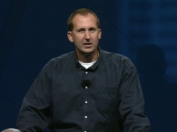

PDC 2001—or, the "Hailstorm" PDC—took place in Los Angeles, California. Release candidates of the .NET Framework and Visual Studio .NET were announced during Bill Gates' keynote, and .NET…
PDC 2001 Keynote with Rick Rashid [WMV] [1:26:14] [2011/05/21]
[WMV] [1:26:14] [2011/05/21]This PDC 2001 Keynote is delivered by with Rick Rashid on the final day of the conference. Watch as Rick, who runs the research organization here at Microsoft, talks about the future.
PDC 2001 Keynote with Bill Gates[WMV] [2:01:55] [2011/05/21]Bill is back in this PDC 2001 Keynote address. With over 6800 developers in the audience, Bill gets straight into the key tools for the next generation of applications.
PDC 2001 Keynote with Michael Wallent and Bill Gates[WMV] [2:24:55] [2011/05/21]This PDC 2001 Keynote was all about the launch of Windows XP. The video also includes footage of Bill Gates and Regis Philbin playing a mock game of Who Wants to Be a Millionaire with all Windows…
PDC 2001 Keynote with Eric Rudder[WMV] [1:45:58] [2011/05/21]The PDC 2001 Keynote with Eric Rudder opens with Robert Hess playing with some .NET playing cards, demonstrating a card game that allows attendees to win prizes. Then Eric Rudder appears on stage to…
PDC 2001 Keynote with Paul Flessner[WMV] [1:18:14] [2011/05/21]This PDC 2001 Keynote features Paul Flessner, the Senior Vice President of .NET enterprise servers.
PDC 2001 Keynote with Bob Muglia[WMV] [1:24:38] [2011/05/21]This PDC 2001 Keynote features Bob Muglia, who admits the "Hailstorm" code name may have been a little over the top. His keynote focuses on what's possible with the new .NET services technology.
PDC 2001 Keynote with Yuval Neeman[WMV] [1:29:33] [2011/05/21]The PDC 2001 Keynote with Yuval Neeman.